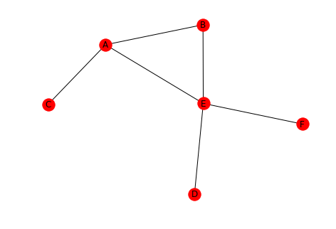

Node Importance
1 Introduction
When looking at a network one of the things that might be useful is to identify the "important" nodes. Some cases where this would be useful are:
- indentifying people who have many connections in a social network
- people who are closest to other members of the network
- weakest links in the network
# from pypi import networkx
% matplotlib inline
2 Degree Centrality (undirected)
Degree centrality starts with the assumption that the person with the most connections (edges) is the most important. Rather than returning a count it is the degree of the node divided by the total possible number of edges that the node could have. For the case of the directed graph the degree of the incoming vertices and outgoing vertices would likely be treated separately.
Where N is the the graph and v is the vertex (node) that we are measuring.
- A Degree Centrality of 1 means the node is directly connected to every other node
- A Degree Centrality of 0 means the node isn't connected to any other node in the network
graph = networkx.Graph() left = tuple("AAABDE") right = tuple("BCEEEF") edges = list(zip(left, right)) graph.add_edges_from(edges) networkx.draw(graph, with_labels=True)
In this graph there are six nodes so each node can have at most 5 links. E has 4 so the degree centrality should be 4/5.
degree_centrality = networkx.degree_centrality(graph) print(degree_centrality) assert degree_centrality["E"] == 4/5
{'B': 0.4, 'E': 0.8, 'A': 0.6000000000000001, 'C': 0.2, 'D': 0.2, 'F': 0.2}
3 Closeness Centrality
This measure assumes that the node that is closest to all the other nodes is the most important. It is the ratio of the highest possible degree for the node to the sum of the shortest paths to the other nodes.
Looking at E again, you can see that the sum of its shortest paths is 6 so the closeness centrality should be 5/6.
closeness_centrality = networkx.closeness_centrality(graph) print(closeness_centrality) assert closeness_centrality["E"] == 5/6
{'B': 0.625, 'E': 0.8333333333333334, 'A': 0.7142857142857143, 'C': 0.45454545454545453, 'D': 0.5, 'F': 0.5}